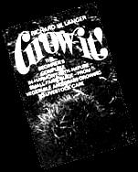
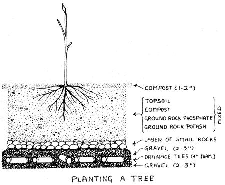
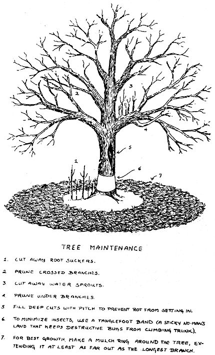
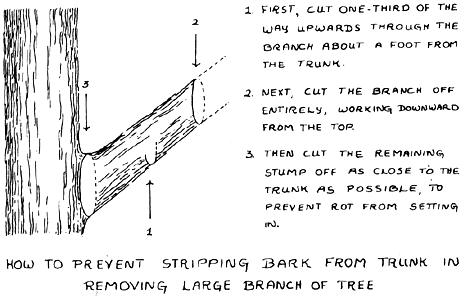

SPECIAL NOTE: GROW IT! is a big book and even if a chunk this size were to be run in issue after issue after issue of MOTHER, it would take over two years to put the complete volume in your hands. If you haven't got two years to play around with, we recommend that you truck on down to your nearest book store and shell out $8.95 for your very own copy of GROW IT! That way, Richard Langer will be happy, Saturday Review Press will be happy . . . and we're betting that you'll be happy too. It's a darn good book.
EXTRA SPECIAL NOTE: All material here reprinted from GROW IT! Copyright © 1972 by Richard W. Langer.
At last! For the first time since the HAVE-MORE Plan was published way back in 1940', a fellow named Richard W. Langer has come up with a 365-page book that really introduces a beginner to small-scale farming. Wanna raise your own fruit, nus. berries, vegetables, grain, chickens. pigs, like it, and here's another chapter from the book.
Loveliest of trees, the cherry now
Is hung with bloom along the bough,
And stands about the woodland ride
Wearing white for Eastertide.
-A.E. HOUSMAN
All worms have an apple,
But not all apples have a worm
-PETER REEVES
There's no place on the farm quite like the orchard. For dew-fresh fruit, but also for picnics in blossom time, watching the bees gather nectar for your honey, and simply enjoying life. Making a detour on your way to feed the chickens in the morning and stopping by the orchard for a night-chilled Transparent apple is a country experience hard to pass up.
The only problem is, unless your land comes with an established orchard, it's going to take a couple of years' wait. That's why the orchard should be one of the first things you set out. If, as is likely, you move to the country in spring or summer, planning your grove of fruit trees right away and getting the trees in time for fall planting will give you a year's head start over putting it off till you're settled in. Even if you don't have time to get the trees, you can sow a green manure crop of rye to help prepare the land for early spring planting the next year. Fruit trees can be set in either season as long as they are naturally dormant when transplanted.
To speed up your first yield even further, try a few dwarf trees. You probably won't bother much with these once your big ones start bearing, but they will give you an initial crop to tide you over the second or third year of waiting.
ORCHARD LOCATION
The orchard is going to be around for some time. That's your first consideration in deciding where to locate it. You can put a vegetable garden on a slope that you expect to be part of a pond in a few years. To do so with the orchard would be a waste of either orchard or pond.
As a permanent addition to your homestead, the orchard should have not only good soil, but good air and water drainage as well. Thus a slope is the best location if you have one. Avoid low-lying sites, since these harbor the cold in winter, making any trees there more likely candidates for winter-killing than others in the area. A northern slope will delay blooming and subsequent fruit. A southern slope will speed up both. The ideal spot is on the small hills surrounding a valley or depression. Trees with early frost-sensitive blossoms can be planted halfway up the northern slope, the less sensitive trees halfway up the southern slope. No trees should be exposed to the windy hilltops and none to the frost-retentive bottom land. Rows of trees planted on hills should, of course, follow the contour system.
The soil in your orchard should be as good as you can make it. If you want to plant fruit trees right away and your soil is hard clay or sand, you'll have to build it up for each individual tree. It will pay you to fill the excavations in which the trees are to be set with improved soil, compost, rotted manure, ground rock phosphate, and rock potash to a depth of-hold onto the book-about five feet.
If you've ever dug a five-foot hole, you'll have some idea of what it's like to dig ten of them, or twenty, or however many as the fruit trees you're going to plant. The minimum would be two, since you should never plant just one tree of a given fruit if you want a good crop. There are two solutions to the labor problem. Either get someone with a hack hoe - other mechanical excavator to come in and make holes for you. Or plant just two or three trees the first year, which will give you a good head start, and spend the rest of the year building up the soil for the others with cover crops of rye and clover alternated with liberal manuring. Another possibility is to set out a couple of dwarf fruit trees near the house, and leave the orchard be entirely until you've built up the soil for it thoroughly.
Of course, you may be lucky and have an orchard site with soil of good enough quality to use just as it is. What you want is a nice medium loam rich in organic material, but also with some sand. If you have straight clay or heavy sand, start digging.
PLANTING
Even if your soil is ideal, prepare to spend a bit of time with a pickax and shovel. The minimum size for a tree hole is three times the size of the root ball. In the case of fruit trees, the bigger the better. Usually one no smaller than three or four feet in diameter and two to three feet deep is dug. Pile the topsoil separately, since this is what should go back into the bottom of the hole along with well-aged nitrogen-rich compost and ground rock phosphate and rock potash. Don't use fresh manure. Spread most of the extra subsurface soil elsewhere and grow a cover crop over it.
If what you're removing is almost solid clay soil, and you're replacing it with the ideal light, humus-filled one, the improved area around the tree will act as a sponge. Water retention will be too much. In this case, put a tile drain at the bottom of the hole. This is simply a single row, or a cross, of sections of drainage pipe, usually four inches in diameter, spaced out on top of a layer of gravel across the floor of the hole. It leads the water away from the root area, culvert-fashion, to the surrounding subsoil.
The mechanics of planting fruit trees are important. All injured and broken roots must be pruned back. The roots are then spread out evenly on top of a layer of enriched soil replaced in the hole to raise the tree to its proper level. Make sure you keep the roots moist while you work. It's a good idea to mix up a bucket of mud slurry from your compost to pour over the roots when they are spread out. The slurry will coat the finer roots, keeping them moist, minimizing air pockets, and helping to settle them in. Fill the rest of the hole, tamp down the soil and give it a heavy dousing of water or light mud slurry. The tree should sit in the center of a slight depression about a foot in diameter. At the same distance out put up a two-foot-high wire mesh "collar" to keep out field mice, rabbits, etc. Outside of this mini-fence cover the ground with an inch of rotted manure extended all the way to eight feet from the tree. Cover the circle in turn with about a foot of hay mulch.
A regular fruit tree should be planted at least twenty feet from its nearest neighbor. Dwarf fruit trees can be spaced as close as ten feet apart. Set the tree straight to ever so slightly leaning in the direction of any prevailing winds. The largest branch, like a weather vane, should point into the prevailing wind. Prune back the branches of a newly planted tree a little more, proportionately, than the root loss. This will give it a chance to build a good strong root system. Give the trunk a pole support to prevent wind whipping from loosening the roots.
One final thought on planting. Science is discovering more and more about the roles bacteria and fungi play in crop growth. There are no doubt some of both interacting with the orchard. An old farmer I know would never plant a new fruit or nut tree without going around to an orchard he particularly admired and, picking the best tree of the kind he was planting, "borrowing" a shovelful of dirt as a "starter" for his own tree. Now I'm not saying this is necessary . . . the only reason I mention it is because his new trees never failed, and they were always covered in season with the most incredibly delicious fruit.
MAINTENANCE
Even organic gardeners spray their trees. Lest this make you sit up and wonder what happened to the natural approach, the spray referred to is not DDT or one of the countless other chemicals used by many commercial orchards. What the organic gardener uses is a miscible oil spray. It is a dormant spray, one applied before a tree begins its annual growth and which disappears before the leaves begin to emerge. Instead of poisoning insects, and the tree with them, a miscible oil spray simply puts your fruit tree in a temporary Baggie, suffocating everything that moves inside . . . except the tree, which is dormant. If it's not, well, you take it from there. Even miscible oil sprays call for caution and common sense in using, but, properly applied, they will not harm your trees.
Miscible oil sprays for dormant spraying are available in concentrated form through mail order and probably from nurseries in your area. Dilute and use according to the instructions. If you have an old established orchard on your spread and are trying to rehabilitate it, miscible oil sprays may not seem to be much protection at first because of the sheer number of bugs around. But have patience and eventually you will restore the natural balance. With new orchards and healthy, well-fertilized stock, miscible oil sprays should keep most of your problems in check from the start.
FERTILIZING
Early in spring, a month or so before a tree blooms, work into the soil around it some high-nitrogen fertilizer. A quarter of a pound of blood meal or eight pounds of manure for each year's growth is about right. Cover with a new layer of straw or hay mulch, keeping the area immediately around the base of the tree clear to discourage mice. For the little ring around the trunk, work in a two- or three-inch layer of well-aged compost instead. The compost should not actually raise the soil level at the trunk itself, or it may induce rot. A rule of thumb for young trees is to build the fertilizer layer out in a circle encompassing the widest branch of the tree.
There are over a thousand apple varieties, which gives you plenty to choose from. A few well-tested varieties, such as Gravenstein, Golden Delicious, Grimes, Rome Beauty, and Yellow Transparent, should be the basic stock of your orchard, but try some of the lesser-known ones as well. Apple trees tend to bring surprises, and a well-cared-for minor variety may give you the most wonderful fruit.
Apples will grow almost anywhere in the United States except in the hottest regions. They need the cool-to-cold winters during dormancy. Your local nursery will no doubt give you an indication of not only the feasibility of growing apples, but the best varieties for that area as well.
STOCK
Apple trees, except for the dwarfs, which bear small crops in their second or third year, usually won't give you any apples until their fifth to sixth year. But by the tenth year they're at peak production, yielding five to ten bushels per tree per year. And they will keep bearing for thirty years or more. So order two varieties at the very least. Not just because thirty or forty bushels of one kind might become a bit boring, but because some are eating apples and some for cooking. Also cross-fertilization will increase your crop. Stock usually comes in one-, two-, or three-year-olds. You'll find the older ones more expensive, of course. On the other hand, being transplants, they are usually sturdier trees. Bought from a good nursery, two- to three-year-olds are your best bet.
PRUNING
If you buy two- or three-year-old transplants, they should need no pruning the first two years besides the initial one on planting to eliminate injured roots and take the wood down a bit proportionately.
After the first two years, your primary pruning job will be to make the tree easy to pick from and somewhat squat in shape. The center of the tree must be kept open . . . don't let the growth get too dense. Cut off branches that cross and rub against each other in the wind. Any branch so large it can't be pruned off with shears, should be cut in three stages with a saw, as shown in the diagram.
As the tree grows older, you will notice small, short cluster branches of buds developing along the real branches. These must not be cut off . . . they're the bearing spurs that will give you your fruit.
The spurs will bear lovely flowers . . . in fact, too many of them. If you walk through your orchard one day during blossom time and notice a host of pink and white petals falling, don't faint. It's quite natural. The tree would otherwise bear far too much fruit for it to carry and these dropping flowers are its natural way of cutting back the crop. Even so, once the fruit sets, you will probably have to tree-cull some of it. Don't let the young apples crowd each other. Not only can their weight break the branch, but too many apples spoil the crop.
PROBLEMS
Preventative care and healthy, well-nourished trees will minimize problems. However, there are some regions of the country in which cedar rust, scab, or fire blight readily attack apple trees. In these areas resistant varieties are grown. By taking the simple precaution of finding out from your county agent what the pests in your region are and selecting the appropriate resistant species, a lot of disappointment will be avoided.
The second problem-solving rule is, if it looks unhealthy, get rid of it. Branches with mildew or an area of prematurely yellow, withered leaves should be pruned out, and fallen spoiled apples or infected fruit removed. Don't leave sickly cuttings in the neighborhood of your trees. All diseased branches should be burned in a hot fire a good distance from your orchard.
The first week in June hang a trap on each of your trees for bugs. Use a wide-mouthed jar covered with a coarse wire mesh with holes just small enough not to admit bees. Fill it half full with a solution of one part molasses to ten parts water. A bit of yeast helps things along. Hang the jar on the southern side of the trunk. This will attract all sorts of nonsense. You'll even end up with a couple of persistent young honeybees in the wrong pot. It will also, however, eliminate most of the apple flies, whose maggots have an annoying habit of tunneling into your apples. Keep the traps up for the rest of the bearing season.
On the other hand, if the answer (Finding half a worm.) to "What's worse than biting into an apple and finding a worm?" doesn't bother you, the bug trap may not be necessary at all. The easiest solution, of course, is to share the apples with your livestock . . . they get the culled wormy ones.
HARVESTING
Pick apples sun-ripe, naturally. Hold the apple in your hand thumb against the stem, and with a light upward and sideways motion, twist it off. Be careful not to injure the spur on which the apple grew, since it will bear again next year. Also, don't twist the stem out of an apple you want to store . . . this would break open the skin to decay-causing bacteria.
You can't store summer apples, only fall and winter ones. However, there's no need to get a bellyache harvesting them. The cooking varieties make great applesauce and apple butter to raid the pantry shelves for later.
Cherries come in two types, sweet and sour. Sour cherries aren't often seen in the city, but they can't be beat for preserves, jam, pies, and the like. They are also hardier than the sweet varieties.
In general, cherries will do well under the same climatic conditions as apples. They are not as frost-fussy as apricots or peaches . . . in fact, they are one of the easiest stone fruits to grow, particularly the sour cherries. The best way to find out how they will do in your region is to check with the county agent and local orchards. Sour cherries begin to bear in their fourth or fifth year, sweet cherries two years later.
STOCK
Not only should you get both sweet and sour cherries, where possible, but you will probably have to get several varieties of the sweet. The really tasty ones like Bing and Napoleon are self-sterile and inter-sterile as well. That is, not only can't these trees fertilize their own flowers, even a neighboring tree of the same variety can't do it. They need Black Tartarians or other fertilizers around. To boot, the two "mates" have to bloom at the same time. Consult with a local nurseryman. This is nothing to try to coordinate through a mail-order house. If there's no nurseryman handy, make sure the trees you choose are double-bearing. These bear two different kinds of cherries at the same time. They have had a branch from a different species grafted to their trunk as a pollinating pal while still young stock.
A cherry tree, double-bearing or otherwise, will come grafted to rootstock better adjusted to supporting a yield than its original roots were. The two common rootstocks for grafting are mazzard and mahaleb. They are both wild cherry stocks, hardier than the superbred domestic ones. Mazzard stock is particularly good if you can get it. It is also more expensive, but in a long-range project like an orchard a little more money is well invested. Mahaleb-grafted cherries bear a year earlier, which often makes them the more popular. But the overall yield will probably be less.
Two-year-old grafted trees-the age is measured from the time of grafting-with the beginning of a well-spaced lateral branch system are the ones to buy. Fall planting is best for them. Mulch well for winter protection.
PRUNING
Like all fruit trees, cherry trees are pruned with the long-range intent of shaping them for easier picking and bigger yields. This means a tree open enough to permit light penetration. But sweet cherry trees naturally grow tall and upright. And you're working with nature . . . you can't change her too much and still expect cooperation. Therefore your sweet cherries will have to be pruned into taller trees than your sour ones.
Prune so that four or five branches off the main trunk become the primary bearing limbs of a cherry tree. They should leave the tree at a wide angle. The single top growing straight up is your leader. Leave it alone. But trim all other branches so they are shorter than the leader.
In deciding which branches to prune off, look for ones that point sharply upward. Also, you won't want the remaining branches to be too close together or all on one side. Mentally blow the tree up to climbing size. Could you climb it comfortably? A tree pruned for good climbing is a tree that will bear well. A good treehouse-tree, on the other hand, one that has three or four branches all coming out at the same spot up the trunk, is less apt to be a high-yielding tree.
Major pruning for shape need be done only once. Usually it's done when the tree is first planted, since this forces good root development. Maintenance pruning after that consists only of trimming out cross-branches that rub together, dead or sickly branches, and those that make a tree lopsided, filling out too much in one direction. Overall, up to ten major branches may be allowed to develop over the years.
PROBLEMS
Sour cherries are more disease-resistant than the sweet type . . . which is why you'll rarely find a sweet wild cherry. One pest to which they are both prey, however, is the tent caterpillar. If tent caterpillars strike, you have two alternatives. Let them be, and they'll eat every leaf in sight, multiply happily, kill the tree, and after several years decrease in numbers for lack of food. Or harvest the caterpillars as soon as you spot them. If you can manage to keep the population down, the cycle won't have a chance to start spiraling, and eventually they will disappear. If harvesting tent caterpillars is not your idea of how to spend a sunny Sunday, get some praying mantises to give you a hand.
You will occasionally find worms in your cherries. How you feel about the changing times and the "new squeamishness" will determine how you feel about the worms. My grandmother used to deal with worms in preserving cherries simply by going ahead and canning them. When you opened a jar of the incredibly tasty compote, you simply skimmed the worms off the top in the kitchen before ladling the plumblack cherries into the Limoges dishes for presentation in the dining room. The worms had been boiled out and were as neatly preserved as the cherries. Now I'd have to admit that finding worms in a can of commercial preserves these days would upset me a little, but not nearly as much as the DDT and additives in it that I don't see.
A final problem with cherry trees is birds. This one you're not going to avoid "noways, nohow". You'll begin to think you're running an aviary instead of an orchard. So you do one of two things. Either you generously plant enough extra trees to feed the birds too, including some mulberries, which they like best of all, or you cover the trees with bird netting. Myself, I prefer birds to ghostly draped trees that vaguely hint of nature gone away on vacation. Commercial orchards employ an automatic cannon that goes off with an explosive bang-but no ammunition-scaring the birds away. Again personally, I can think of better ways to spend my time in the country than being surrounded by cannon fire.
HARVESTING
The biggest harvesting problem with cherries is avoiding a bellyache. If you work on the one-for-yourself, three-for-the-basket principle, you might survive. Pick fruit for eating without stems. They won't keep as long, but it's less of a strain on the tree. Fruit for storage or sale should be picked with the stems. Use a light, twisting, upward movement to separate the stem from the spur. Be careful not to injure or break the spur . . . it's the source of your future fruit.
Peaches present the paradox that they'll grow in almost any part of the country, but can be grown well in very few. Still, the smallest peach from your own tree will be tastier than most store-bought ones, even though peaches ship better than many fruits.
The peach needs both cold (below 40°F.) and warmth. Without a winter cold snap, the trees skip their dormant period and become too exhausted to bear. On the other hand, the early-flowering buds are very cold-sensitive. One frost and you're wiped out. And without summer warmth the fruit will not mature. Even so, the geographical range for homegrown peaches is almost nationwide, so try a few trees if at all possible.
STOCK
Since peach trees are so widespread but variable in adaptation, it's important to get stock suitable for your region. There are literally thousands of varieties, and although there is none best suited for downtown San Francisco or mid-Manhattan, there is a variety best for your farm. The trees are for the most part self-pollinating. But it's never a good idea to have less than two or three trees of any given fruit.
You'll get your first peaches after three or four years . . . the big yields will take another three. At that stage of the game you can count on four bushels per healthy tree. Spring planting is the best. A sandy or gravelly loam is preferred. Use a northern slope to delay blossoming if you're in an area of late frost.
PRUNING
Prepare to butcher your peach tree when you plant it. Peaches don't take too well to transplanting, so you will have to cut back the tops severely in order to encourage root development. Trim the leader back almost a third of the total plant height, making sure to cut just above a branch. The new leader will emerge from the junction and you don't want dead wood above it. Prune all the branches back to one and two-inch stubs. The effect you want is a spiked miniflagpole. From the stubs eliminate all but three or four of the new buds that appear in the summertime. The object of the game is to develop a tree with three or four main branches rising together . . . in other words, a treehouse tree rather than a climbing one.
Regular spring maintenance pruning is the same as for other trees. Get rid of dead branches and shape the tree to be open and without crisscrossing branches. Also, when the tree begins to bear, you will have to thin out fruit growing too close together. One peach to every four or five inches of branch is plenty for it to bear. Even so, if a mature tree lets its branches droop heavily with fruit, you may have to support the branches with braces. Peach trees are prone to natural pruning, that is, branches break off from the weight of too much fruit.
PROBLEMS
Most peach tree problems will not strike a healthy tree. And those that are serious enough to destroy the tree won't be stopped by all the chemicals or anything else around, unless you kill the tree first anyhow. So sit back and let nature take its course. Fertilize your trees with nitrogen-rich compost in early spring to boost plant growth. Mulch the orchard, but keep the mulch at least two feet from the trunks to minimize peach tree borers. Prune away dead branches and those with injured bark, and pick off any strange bugs or their nests that you spot.
HARVESTING
Pick peaches when soft enough to give slightly under light thumb pressure. You've squeezed peaches at your local green-grocer's. Same principle, different fruit . . . the ones you pick ripe off the tree are much more nourishing. Twist fruit up and out as with others.
Peaches not fully ripe can be picked for storage if the season is running out on you, but be sure not to bruise them. Even gently harvested, they won't store for more than three or four weeks in a cool cellar. Make jam of the extras . . . peach jam rivals apricot for sheer lusciousness.
Pears, like peaches, need to be winter-chilled. In general, they can be grown in the same regions as apples and peaches. They are hardier than peaches, but they flower earlier than apple trees, so watch for chills. Areas of consistent zero-degree winters are about the northern-most limit for pear trees, and with such temperatures winter-killing of the buds may occur.
Pear trees do well on poorer soil as long as it's well drained. In fact, very rich soil will produce overly lush growth, which in turn will encourage fire blight. Like Cassius, they should have a lean and hungry look.
STOCK
Self-sterile for the most part, pear trees are best ordered in different varieties if you want to be on the safe side, in which case they'll also need to be same-time bloomers. Buy one-yearold grafted whips around five feet tall. These should be about one-half- to three-quarters-inch thick, with smooth, even bark. Plant in early spring, on a northern slope where possible to protect them from premature flowering and a too-hot summer sun. Prune back about 25 percent on planting and don't use a fertilizer rich in nitrogen . . . this is one tree you don't want to grow very fast.
PRUNING
A minimum-pruning tree. After the initial planting trim, help shape it and remove root suckers when they form, but never give it a heavy pruning to boost growth. It would respond too well, and fire blight would follow only too often. Also very rapid growth makes the tree literally jump out of its skin . . . the bark splits, inviting borers and a multitude of other nuisances.
PROBLEMS
The main thing you have to worry about with pear trees is fire blight, and it may be hard to avoid in the healthiest of trees. Fire blight derives its name from the fact that the affected parts look as if someone had gone over them with a blowtorch while you weren't looking. It can strike all parts of the tree from flowers to main trunk, but not at the same time. This is your key to keeping pear production going. Trim off any blighted area as soon as you see it. Branches should be removed with a foot of healthy wood behind them. Don't handle the affected part and then the rest of the tree . . . would you blow your nose in someone else's old handkerchief? Keep all infected trimmings away from the tree trunk while you work, and burn them in a hot fire away from the orchard. The worst blight season is from bloom till fruit . . . this is the time to keep a sharp lookout for the culprit.
HARVESTING
Some pears must be harvested before they are ripe or they turn gravelly. The only way to find out if your variety falls into this category is to pick some when they are mature in size but just beginning to turn color, letting the others ripen on the tree. Compare quality. Next year you'll know. Pears picked just before the first blush of color can be cold-stored for two to three months or more.
Like most other temperate fruit, plums need to be winter-chilled in order to bear. They can be grown in just about any part of the United States where winter temperatures fall below 40°F. for a few weeks but not below-25°F. for the same period of time.
As usual, select a locally adapted variety, bearing in mind that prune plums will be needed if you want to make a lot of prunes. Regular plums can be dried too, but they have to be pitted and halved . . . their sugar content is not high enough to preserve them without fermentation.
STOCK
You will need at least two varieties, since most plums are self-sterile. All plums are root-grafted, which means on a one-year-old tree you'll be getting solid two- or three-year-old rootstock. Plant in fall if the winters in your area are mild enough so that temperatures do not go below the teens except on very rare occasions. Spring planting is fine as long as the tree is completely dormant, but fall planting is better where possible.
Space the trees fifteen to thirty feet apart, depending on the mature size of your particular species. Plum bark is sensitive to sun-scald (to a tree what a sunburn is to people), so wrap a couple of layers of burlap around the lower part of the trunk. Cut the wood back by 25 percent when you plant.
PRUNING
Pruning is mostly confine to shaping a wide, open, spreading tree, and, of course, regular maintenance trimming. Once fruiting begins, you may have to support some of the bearing branches like those of your peach trees. Eliminating overbearing by selectively removing small, unripe fruit will also be necessary. Keep all pruning cuts clean and, if possible, seal them over with pitch to protect against heart rot.
PROBLEMS
As with cherries, birds can be a menace. Try a mulberry hedge around your orchard. Birds simply love mulberries, and they will often stop at the hedge and fill themselves up before they ever reach your fruit.
HARVESTING
Harvest plums when fully ripe for eating, just a little before for canning. Prune varieties should be allowed to ripen till they drop . . . into a cheesecloth trampoline you have suspended beneath the tree. Remove fallen fruit daily and sun-dry on screen trays, turning occasionally. If it's rainy, oven-dry in single layers for six hours at 110° F.
|
 |
 |
 |
|
 |
|
|